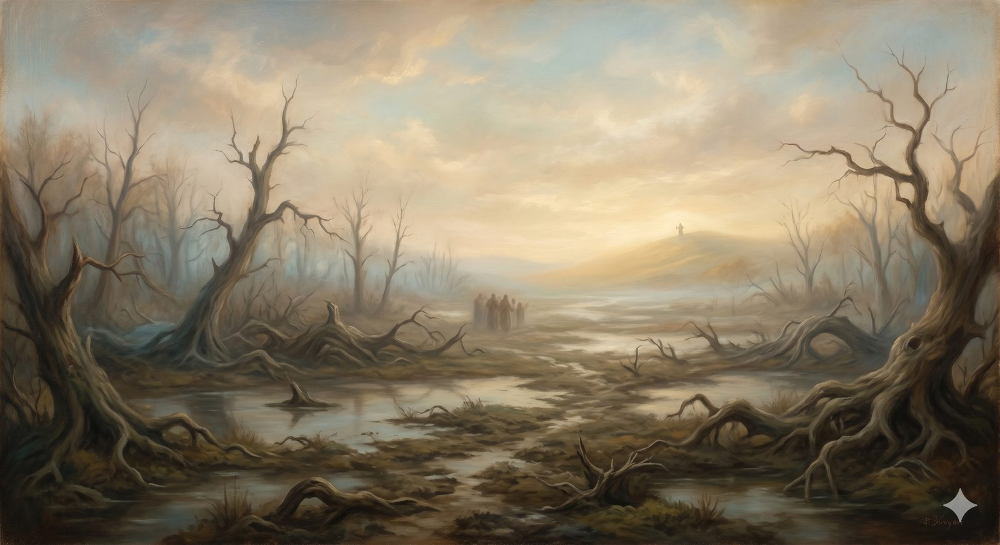

The Slough of Despond
The sinking that comes after an honest look — and the difference between grief that drowns and grief that turns home.
“My tears have been my food day and night, while they say to me all the day long, ‘Where is your God?’” Psalm 42:3 (ESV)
No sooner has Bunyan's pilgrim set out than the ground gives way beneath him. He stumbles into a bog — the Slough of Despond — and the more he struggles the deeper he sinks, weighed down by the burden on his back. He is not lost. He has not turned around. He is on the right road, in the right direction, and he is up to his chest in mud.
That is worth saying plainly, because it is the first thing many people meet after an honest look at themselves: not relief, but a sinking. The diagnosis was true, and now it sits on you. If that is where you are, you have not gone wrong. You have arrived at a place the road actually passes through — and there is a name for what to do here, and a difference that makes all the difference.
Part OneTwo kinds of sinking
The mud in the Slough is real, but not all of it is the same. Scripture draws a sharp line between two sorrows that can feel, from the inside, almost identical.
Paul names them: godly grief produces a repentance that leads to salvation without regret, whereas worldly grief produces death. One sorrow turns you toward home. The other just pulls you under. The difference is not how bad you feel — godly grief can ache far more sharply — but which direction the sorrow faces. Conviction faces forward: it grieves what was traded away and turns back toward the fountain. Condemnation faces only downward: it agrees that you are sinking and offers no way out but to sink.
Here is the line to hold onto in the mud, because the enemy of your soul will work hard to blur it: conviction is not condemnation. The Spirit convicts in order to draw you back; he never simply accuses in order to drown you. If the voice you are hearing says you have left something precious, and you can come home — that is conviction, and it is mercy. If the voice says only you are beyond help, and there is no point — that is not the Spirit of the God who runs toward returning children.
📖 The Scripture behind this Directwhat’s this?›
The claim: The grief that conviction of sin produces is a genuine, God-given sorrow that leads toward life — categorically different from the worldly sorrow that only crushes.
- 2 Corinthians 7:10 (ESV) — “For godly grief produces a repentance that leads to salvation without regret, whereas worldly grief produces death.”Paul names two sorrows by their fruit: one leads to salvation, the other to death.
- Psalm 51:17 (ESV) — “The sacrifices of God are a broken spirit; a broken and contrite heart, O God, you will not despise.”The broken and contrite heart is something God receives, not something he holds against the sinner.
- Luke 18:13–14 (ESV) — “God, be merciful to me, a sinner!’ … this man went down to his house justified.”The tax collector’s grief over sin is precisely what accompanies his justification.
No reliance on tradition is required for this claim; the texts carry it in their plain sense.
Part TwoWhen the mud was put there by someone else
For some, the sinking in the Slough did not come from their own choices at all. It was put there by people who should have been safe and were not — by the church itself, by silence that came when God seemed most needed, by harm dressed in the language of faith. If that is you, the rest of this page slows down, because you deserve more than a verse used as a bandage.
So, before anything else is said: what happened to you was real, and it was wrong. If those entrusted with your spiritual care used their authority to shame, coerce, or diminish you, that was a serious wrong — and the fact that it happened inside the church does not sanctify it. It makes it worse. You are not a lesser case here, and you are not an edge case. A faith that cannot speak to you honestly is not telling the whole truth about what the gospel is.
And there is a distinction in the mud that may matter more to you than any other: the institution that wounded you is not the same as the God it claimed to represent. The church at its worst has sometimes become the very thing that blocks the view of the God it exists to reveal. That is an old grief — the prophets spent much of their lives on it. The God you are looking toward is not the people who failed you. He is described, by the prophet Isaiah, as the one who will not break a bruised reed or snuff out a smoldering wick — who moves toward the barely-surviving to protect and tend rather than to demand and correct.
In plain terms
If the church hurt you, you do not have to choose between "it wasn't that bad" and "God is just like them." Both are false. The harm was real, and the God who was misrepresented to you is not the one who did it.
📖 The Scripture behind this Entailedwhat’s this?›
The claim: The church that wounds is not the same as the God it claims to represent; God himself stands against shepherds who harm the sheep, and remains gentle toward the wounded.
- Ezekiel 34:2–4, 10 (ESV) — “Ah, shepherds of Israel who have been feeding yourselves! … The weak you have not strengthened … with force and harshness you have ruled them. … Behold, I am against the shepherds.”God explicitly opposes abusive spiritual leaders and distinguishes himself from them.
- Isaiah 42:3 (ESV) — “a bruised reed he will not break, and a faintly burning wick he will not quench.”God’s own posture toward the barely-surviving is to protect and tend, not to crush.
- Matthew 23:4, 13 (ESV) — “They tie up heavy burdens … and lay them on people’s shoulders … But woe to you … you shut the kingdom of heaven in people’s faces.”Christ condemns religious leaders who burden and bar rather than tend.
This is good and necessary consequence, not a single proof-text; the inference is shown rather than assumed.
He does not require you to be well before he will tend to you. He tends to you so that, in time, wellness becomes possible.
Part ThreeYou are allowed to say it out loud
There is a temptation, in the Slough, to think that faith means climbing out quickly and quietly — that the holy thing is to stop feeling what you feel. Scripture says the opposite, and it says it with surprising force.
Roughly a third of the Psalms are laments. One of them, Psalm 88, ends in darkness with no resolution at all. The book of Lamentations holds the ruin of a city before God and offers no tidy comfort. Jeremiah curses the day he was born, and the Spirit saw fit to preserve him doing it. And on the cross, Jesus himself prays a lament — my God, my God, why have you forsaken me? — taking the oldest words of the sinking onto his own lips.
📖 The Scripture behind this Directwhat’s this?›
The claim: Honest lament — darkness spoken aloud to God, even without resolution — is a sanctioned form of prayer, not a failure of faith.
- Psalm 88:18 (ESV) — “You have caused my beloved and my friend to shun me; my companions have become darkness.”A canonical psalm ends in unrelieved darkness — and the Spirit preserved it as prayer.
- Lamentations 3:1–2 (ESV) — “I am the man who has seen affliction under the rod of his wrath; he has driven and brought me into darkness without any light.”An entire book of Scripture holds ruin before God without tidy comfort.
- Matthew 27:46 (ESV) — “My God, my God, why have you forsaken me?”Christ himself prays the oldest lament (Psalm 22) from the cross.
The claim rests on the direct testimony of the inspired text, not on later interpretation.
None of this is a record of failures to be explained away. It is built into the shape of Scripture as permission: you may say this to God. Darkness addressed to God is still prayer — often the truest kind. The way through the Slough is not to pretend you are on dry ground. It is to speak honestly, toward the One who is able to reach in. In Bunyan's story the pilgrim does not climb out by his own strength at all. A man named Help reaches down and pulls him to solid ground. That, too, is the point.
📖 The Scripture behind this Interpretationwhat’s this?›
The claim: In Bunyan’s allegory, the pilgrim is pulled out by ‘Help’ rather than by his own effort — read here as the truth that rescue from the Slough comes from outside oneself, by grace.
- Psalm 40:2 (ESV) — “He drew me up from the pit of destruction, out of the miry bog, and set my feet upon a rock.”God is the one who lifts out of the mire and sets the feet on solid ground.
- Jonah 2:6 (ESV) — “yet you brought up my life from the pit, O LORD my God.”Deliverance from the depths is attributed to God’s action, not the sinker’s struggle.
- Ephesians 2:8–9 (ESV) — “For by grace you have been saved through faith. And this is not your own doing; it is the gift of God, not a result of works.”Salvation is God’s gift from outside us, not self-extraction.
Hold this as an illuminating application, not as a doctrine the verses state outright.
The darkness you are in is not outside the range of what this road calls the life of faith.
The Slough is real, and it is not the end of the road. It is a low place near the beginning, with a gate ahead and Help already reaching down. The next stretch is where many pilgrims are turned aside — not by despair, but by a smoother voice with worse directions.